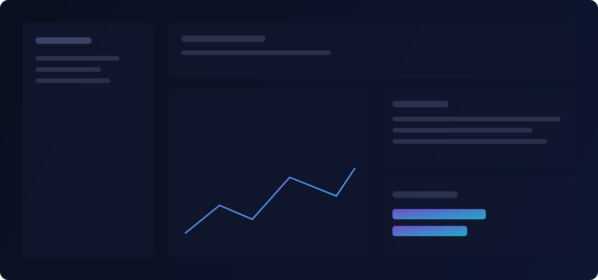

Designing a unified inference layer that survives provider outages
How we built automatic fallbacks, cost-aware routing, and semantic caching into a single API — and what we learned from a 6-hour OpenAI incident.
Jordan Reyes
Founding Engineer · Nexus AI

When you build on a single LLM provider, every minute of their downtime is a minute your product is down. At Nexus AI, we wanted to give teams the flexibility to use any model — and the resilience to keep serving users when any one of them fails.
The problem with provider lock-in
Most teams start by hardcoding calls to a single API. It's fast to ship, but it creates a fragile dependency. When the provider has an incident, rate-limits you, or raises prices, your only options are to wait or rewrite.
A unified inference layer abstracts the provider behind a single interface, so swapping models becomes a config change rather than a code change.
Automatic fallbacks
Our routing layer maintains a prioritized list of providers per model family. On a timeout or error, it transparently retries the next provider — with the same prompt, the same guardrails, and the same streaming contract.
Example configuration
nexus.routes.define({
alias: "smart-chat",
providers: [
{ model: "claude-3.5-sonnet", weight: 70 },
{ model: "gpt-4o", weight: 30 },
],
fallback: "gpt-4o-mini",
cache: { semantic: true, ttl: "1h" }
})Cost-aware routing
Not every request needs the most expensive model. Our router inspects request complexity and steers simple queries to cheaper, faster models while reserving the frontier models for the hard cases — often cutting spend by 40% with no perceptible quality loss.
Lessons from a real incident
- Fallbacks must preserve streaming — a mid-stream switch is invisible to the client.
- Cache invalidation across providers is subtle; cache by semantic intent, not raw provider response.
- Observability is the real safety net: you can only fix what you can see.
The result: a single API that's cheaper, faster, and more reliable than any one provider on its own. That's the foundation Nexus AI is built on.